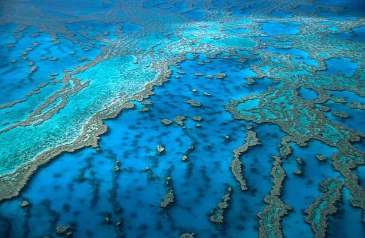

HyperText Markup Language (HTML) adalah bahasa markup standar yang
digunakan untuk membuat halaman web. HTML menyediakan struktur
dasar dan konten untuk halaman web dan bekerja sama dengan
Cascading Style Sheet (CSS) untuk presentasi visual halaman web
dan JavaScript untuk perilaku interaktif.
Elemen Semantik HTML
Elemeen Semantik HTML adalah elemen-elemen yang memiliki makna
atau arti yang spesifik untuk memudahkan mensin pencari dan
pengembang web memahami struktur halaman web. Elemen ini membantu
meningkatkan aksesibilitas dan pengalaman pengguna pada halaman
web.
Keajaiban Alam: Great barrier Reef
Great barrier Reef adalah sistem terumbu karang terbesar di dunia,
membentang sejauh lebih dari 2.300 kilometer di sepanjang pantai
timur Australia. Terumbu karang ini terdiri dari jutaan polip
karang individu yang hidup bersama dalam simbiosis dengan ganggang
fotosintesis. Great barrier Reef adalah rumah bagi berbagai macam
kehidupan laut, termasuk ikan, hiu, penyu, dan terumbu karang.

Great Barrier Reef yang memukau
sayangnya, Great Barrier Reef menghadapi berbagai ancaman,
termasuk perubahan iklim, polusi, dan penagkapan ikan berlebihan.
Sangat penting untuk melindungi terumbu karang ini untuk menjaga
keanekaragaman hayati laut dan keindahan alam.
Ini adalah contoh paragraf dengan white-space: pre-line.
Line break akan dipertahankan,
tapi spasi berlebih digabung.